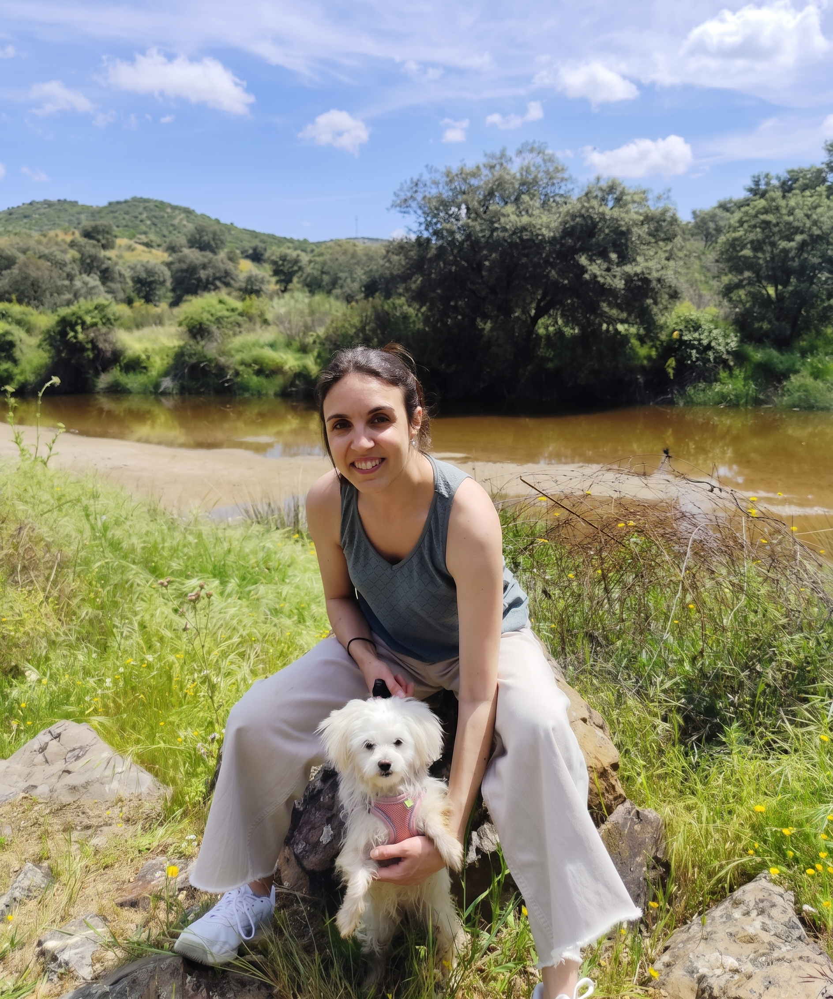

¿Tu mente no para de dar vueltas?
Terapia online para esos pensamientos que se repiten, se cuelan sin avisar y te dejan agotada. Lo construimos juntas, a tu ritmo y a tu medida.
- Sesiones online de 40–45 minutos
- 40 € por sesión
- Enfoque contextual, adaptado a ti: con base científica pero sin protocolos rígidos
- Tú decides cuándo empezar y cuando terminar
Solicita más información
Tanto si quieres agendar una cita como si necesitas resolver alguna duda sobre mi forma de trabajar, no dudes en contactarme y me pondré en contacto contigo en la mayor brevedad posible.
- Enfoque contextual basado en evidencia
- Sesiones online de 40–45 min
- Confidencial, conforme al RGPD
- Respuesta en menos de 48 h
¿Te suena alguna de estas frases?
Si te reconoces, no estás rota ni lo estás haciendo mal. Muchas veces la mente le da vueltas justo a lo que más nos importa. El problema aparece cuando esas vueltas nos quitan la vida que queremos tener.
No se trata de "dejar de pensar"
Intentar no pensar en algo suele hacer que vuelva con más fuerza. Por eso aquí no te voy a pedir que pienses en positivo ni que calles tu mente.
Trabajamos otra cosa: cómo te relacionas con esos pensamientos, para que pesen menos, no decidan por ti y tengas más espacio para lo que de verdad te importa.
Trabajo desde un enfoque contextual: miro qué hay detrás de tu malestar, cuándo aparece y qué te está costando. Dos personas pueden parecer tener el mismo problema y necesitar procesos muy distintos.
Rigor sin rigidez
Uso estrategias con respaldo científico, pero las adapto a ti, no al revés.
Sin juicio, con dirección
No hay pensamientos ni emociones incorrectas. Hay formas de relacionarnos con ellos que abren posibilidades y otras que las cierran.
Tú en el centro
Las sesiones no siguen un guion fijo: parten de lo que traes y de hacia dónde quieres ir.
Un espacio para ti, a tu ritmo
- Videollamada de 40–45 minutos
- Desde donde estés, sin desplazamientos
- Sin guion fijo: cada sesión parte de lo que traes
- No hay un número de sesiones establecido
- Confidencial, conforme al RGPD

Hola, soy Vanessa
Soy terapeuta contextual y educadora social especializada en educación emocional.
Durante años he trabajado y hecho voluntariados con personas en situaciones muy distintas: salud mental, adicciones, personas mayores, infancia… Eso me enseñó que cada persona es diferente y que no hay una única forma de acompañar ni de vivir la vida.
Por eso no trabajo con recetas: me interesa entender qué hay detrás de lo que sientes y qué te ha llevado al lugar donde estás hoy, para poder construir contigo algo que tenga sentido para tu vida y el tipo de persona que quieres ser.
Y fuera de la consulta…
Sé que dar el primer paso puede costar, y más con alguien a quien no conoces de nada, así que para que sepas un poquito más sobre mí: soy una persona con mucha curiosidad y muchas aficiones. Me gusta leer, ver series, pasear por la naturaleza, los animales (tengo una gatita y una perrita), los juegos de mesa y los videojuegos, mirar las estrellas y planetas con mi telescopio y aprender cosas nuevas, especialmente para poder comprender y ayudar a otras personas.
Y sobre el tipo de persona que intento ser, mi norte lo marcan la amabilidad y la humildad (aunque por supuestísimo no soy perfecta y a veces meto la pata y voy en la dirección contraria, hasta que mi brújula me recuerda cuál era el norte). Pienso que la vida es eso: decidir hacia dónde quieres moverte y qué tipo de persona te gustaría ser en ese viaje, y cuando la vida te pone obstáculos o te pierdes, usar esa brújula para volver a tu camino.
Tengo formación en
- Terapias contextuales y de tercera generación
- Terapia de Aceptación y Compromiso
- Terapia Analítico Funcional
- Educación social
- Educación emocional
- Análisis de conducta
Lo que quizá te estás preguntando
¿Cómo sé si es para mí?
Puede serlo si tus pensamientos se repiten, te cuesta soltarlos y sientes que te limitan en tu día a día. No hace falta saber qué te pasa ni tener las palabras exactas. Con que quieras relacionarte de otra manera con lo que piensas y sientes, ya es suficiente para empezar.
¿Dejaré de tener estos pensamientos?
No puedo prometerte eso, y desconfiaría de quien lo hiciera. Lo que trabajamos es cómo te relacionas con ellos: que pesen menos, que no decidan por ti y que tengas más espacio para lo que te importa.
¿Cómo funcionan las sesiones?
Son por videollamada y duran entre 40 y 45 minutos. No hay guion fijo. En la primera sesión exploramos qué te trae y empezamos a trabajar. Las siguientes parten de lo que traes, de lo que practicas entre sesiones y de hacia dónde quieres ir.
¿Cuántas sesiones necesitaré?
No hay un número fijo. Depende de ti y de lo que necesites. En la primera sesión valoramos juntas qué ritmo tiene sentido y lo vamos revisando por el camino.
¿Es confidencial?
Sí. Todo lo que compartes está protegido conforme al RGPD y no comparto tus datos con nadie.
Da el primer paso
Puedes llegar con dudas, con cansancio o con ganas de hacer algo diferente. Eso ya es suficiente.
Cuéntame qué necesitas →